Mahabaleshwar
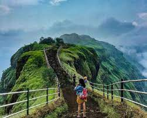 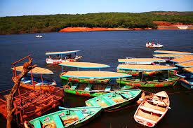 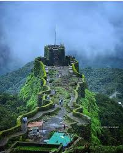Mahabaleshwar Mahableshwar is the best hill station of Maharashtra. It is situated about 4500 ft. above sea level on the Sahyadri spurs. It was the erstwhile summer capital of Old Bombay Presidency. The tourists are enthralled by its exotic greenery, beautiful gardens & breath-taking scenery. Numerous majestic mansions built during the British days still stand as monuments of the Raj. The favorite season for visiting is from March to June.It is well connected by roads, details are at the bottom of this page. Places of interest is called as “Point” in Mahabaleshwar as most of them are at the end of mountains.
Map of mahabaleshwar
Lonavala
 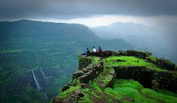
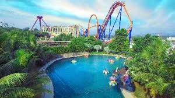
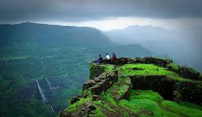
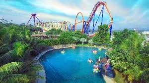
Lonavala is a hill station town and a Municipal Council in the Pune district, Maharashtra, India. It is about 64 km (40 miles) west of Pune and 96 km (60 miles) to the east of Mumbai. It is known for its production of the hard candy chikki and is also a major stop on the railway line connecting Mumbai and Pune. From the Pune suburbs, local trains are available from Pune Junction. Both the Mumbai-Pune Expressway as well as the Mumbai-Bengaluru highway pass through Lonavala. Lonavala is also home to INS Shivaji (formerly HMIS Shivaji) which is the Indian Navy's Premier Technical Training Institute. On 16 Feb 1945, the Establishment was commissioned as HMIS Shivaji and since then, the premier Technical Training Establishment of the Indian Navy trains officers.
Map of Lonavala
Khandala
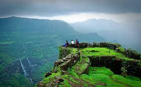 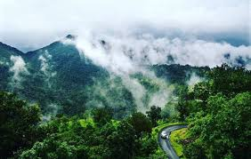 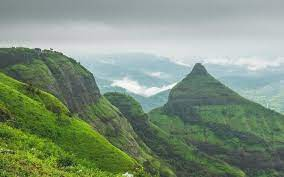Khandala is a hill station in the Western Ghats in the state of Maharashtra, India, about 3 kilometres (1.9 mi) from Lonavala, 12 kilometres from Khopoli and 33.4 kilometres (20.8 mi) from Karjat. Khandala is located at the top end of the Bhor Ghat, a major ghat (meaning valley in Marathi) on the road link between the Deccan Plateau and the Konkan plain. The ghat carries an extensive amount[clarification needed] of road and rail traffic. The Mumbai-Pune Ex highway.
Map of Khandala
Matheran
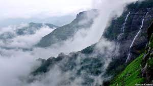 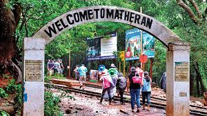 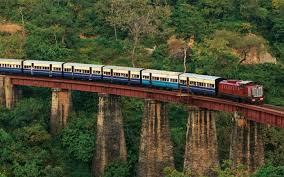Matheran is an automobile-free hill station and a municipal council in the Karjat taluka of the Raigad district located in the Indian state of Maharashtra. Matheran is part of the Mumbai Metropolitan Region, and one of the smallest hill stations in India. It is located in the Western Ghats, at an elevation of around 800 m (2,625 feet) above sea level. It is about 90 km from Mumbai, and 120 km from Pune. This proximity to these urban areas makes it a weekend getaway for many. Matheran, which means "forest on the forehead" (of the mountains) in Marathi, is an eco-sensitive region, declared by the Ministry of Environment, Forest and Climate Change, Government of India. It is Asia's only automobile-free hill station.[1][2] There are many hotels and Parsi bungalows in the area. Old British colonial architecture is preserved in Matheran.[3][4] The roads are made of red laterite earth.
Map of Matheran
Igatpuri
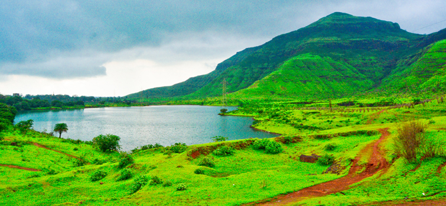 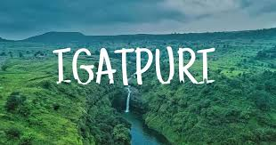 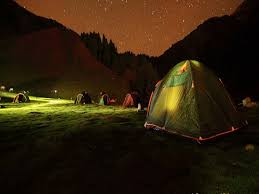Igatpuri hill station is situated in the Nashik district in the state of Maharashtra. Igatpuri gathers a place among the most popular hill stations in India. Situated along the Western Ghats, Igatpuri hill station is known for the Vipassana international academy; where many people come to learn Vipassana, an ancient form of meditation. Camel Valley Igatpuri Igatpuri hill station is surrounded by the highest peaks of the Western Ghats. Some places near Igatpuri are considered to be a heavenly place for the trekkers, i.e. Kalsubai, Bhandardara, Ratangad, etc. You would be glad to know that most of the Indian movie outdoor scenes especially the songs are shot here. Igatpuri is the nearest hill station from Mumbai and famous for its scenic beauty and various types of foods like Vada pav and Idli. Igatpuri is considered as one of the best hill stations in Maharashtra to visit during the monsoons.
Map of Igatpuri
Panchgani
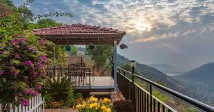 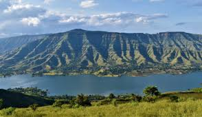 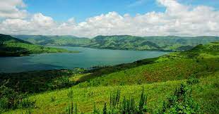Panchgani, called Paachgani (in Marathi), is a hill station and municipal council in Satara district in Maharashtra, India. Panchgani attracts tourists throughout the year. It is also known for having many boarding schools.[1] Panchgani is around 108 kilometres from Pune and 250 kilometres from Mumbai. History Panchgani was developed by the British during the British Raj as a summer resort under the supervision of Lord John Chesson in the 1860s. Panchgani was developed as a retirement place because it remained pleasant throughout the year. He surveyed the hills of this region with Rustomji Dubash, and finally decided on this nameless area around the five villages: Dandeghar, Godavali, Ambral, Khingar, and Taighat. The place was aptly named Panchgani, meaning "land between five villages", and Chesson was made superintendent. To develop the infrastructure, Chesson encouraged various professionals - tailors, dhobis, butchers, vegetable vendors, building contractors - to also settle in Panchgani. The area below the bazaar was allotted to them, and is now known as the gaothan. He is credited with planting plant species from the western world in Panchgani, including silver oak and poinsettia, which have flourished since then in Panchgani. Chesson is buried in the graveyard of St. Peter's Church. In 1971 or '72, his death centenary was observed in a big way when for the first time, the town folk and the schools participated together in a ceremony to remember the founder of Panchgani.[cit
Map of Panchgani
Karjat
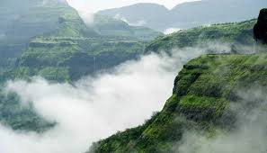 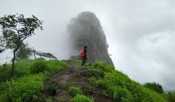 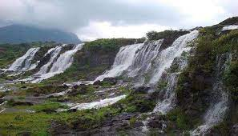Karjat is a hill station located between Pune and Mumbai, at an altitude of 700 meters from the mean sea level. Karjat hill station cover parts of the Western Ghats and the Sahyadri mountain ranges and some parts of the Konkan region. Peth Fort Karjat Karjat is situated at an altitude of about 200 meters from sea level and has a vast population of nearly 2.25 lakh people. The special thing about Karjat hill station is that it is nestled in the Sahyadri mountain range; which is one of the largest biodiversities in the world; supporting a huge number of species of flora and fauna. Karjat being a part of this biodiversity has become the main attraction for nature enthusiasts. In monsoon, Karjat’s vicinity will welcome you to several gurgling cascades and waterfalls. It is a heaven for the Mountaineers and trekkers. You can even go for water rafting on the river Ulhas, just after July. During the winter you can enjoy the beauty of the mountains.
Map of Karjat
Rajmachi
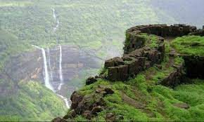 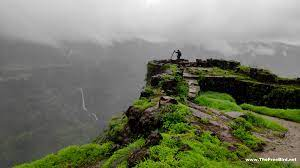 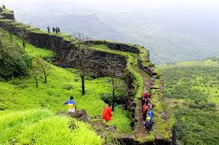Rajmachi is a small village situated in the Sahyadri mountain range of the Konkan region of Maharashtra. Rajmachi is famous for the historical fortress which has two fortified peaks - Shrivardhan and Manaranjan forts, located near two famous hills of Lonavala and Khandala. At the base of the fort is the village Udhewadi which is another name for Rajmachi. Rajmachi has seen many change of hands from Shivaji Maharaj, Emperor Aurangzeb, Shahu Maharaj and eventually the British reign. The fort of Rajmachi is famous among trekkers and adventure enthusiasts. If you want to experience a full-fledged trek, you can start from the Kondhane caves side which will take 3-4 hours of climbing, but otherwise you can drive right upto Udhewadi village (from the Lonavala side) and then trek for hardly 20-30 minutes to the top of the fort. The simple and clearly marked trail on both the paths make Rajmachi a very popular beginner's trek.